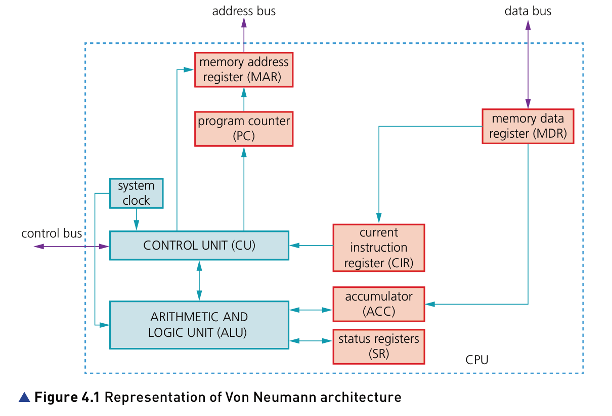
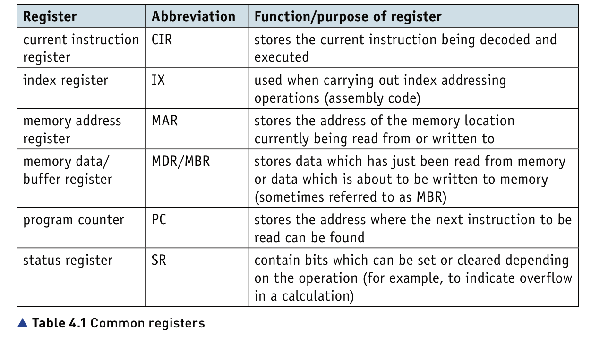
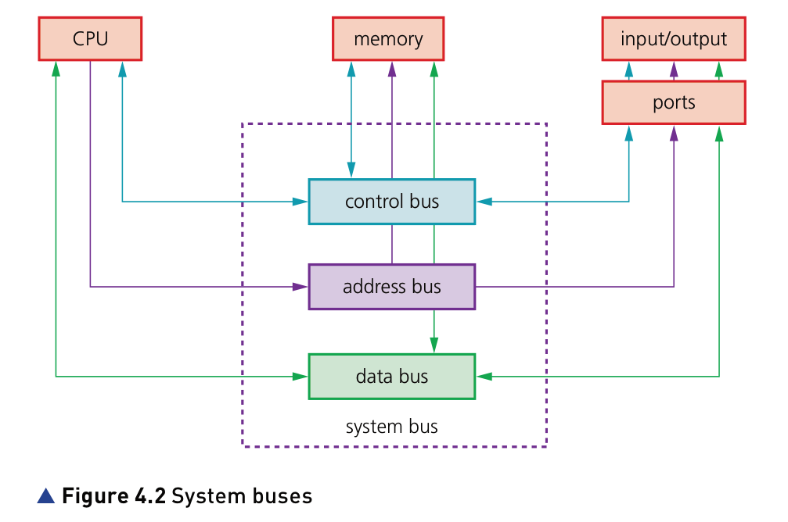
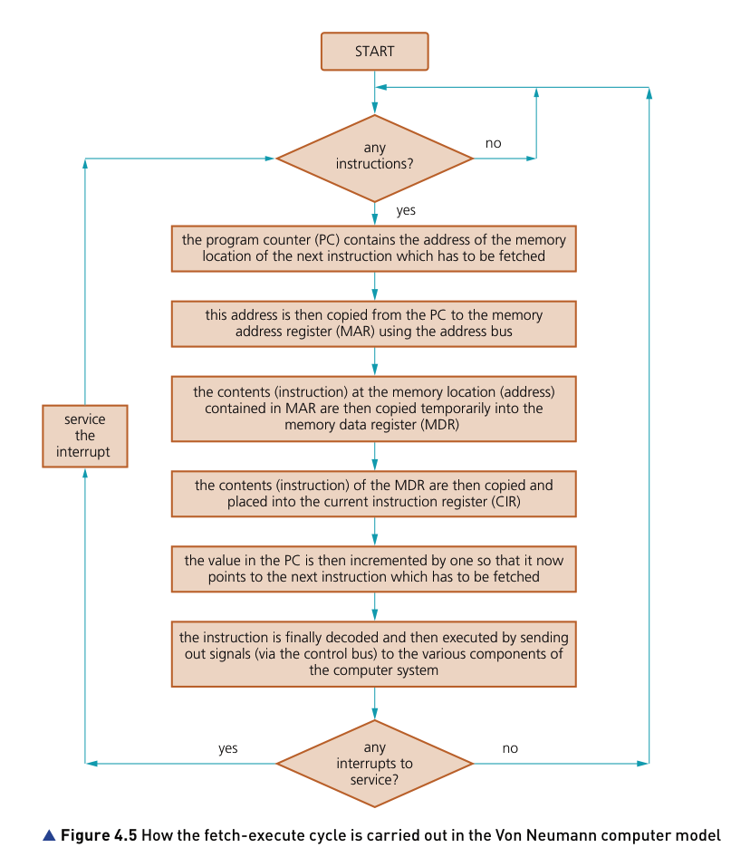
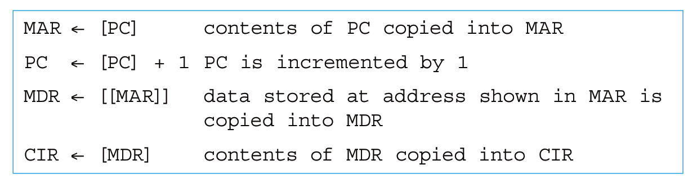
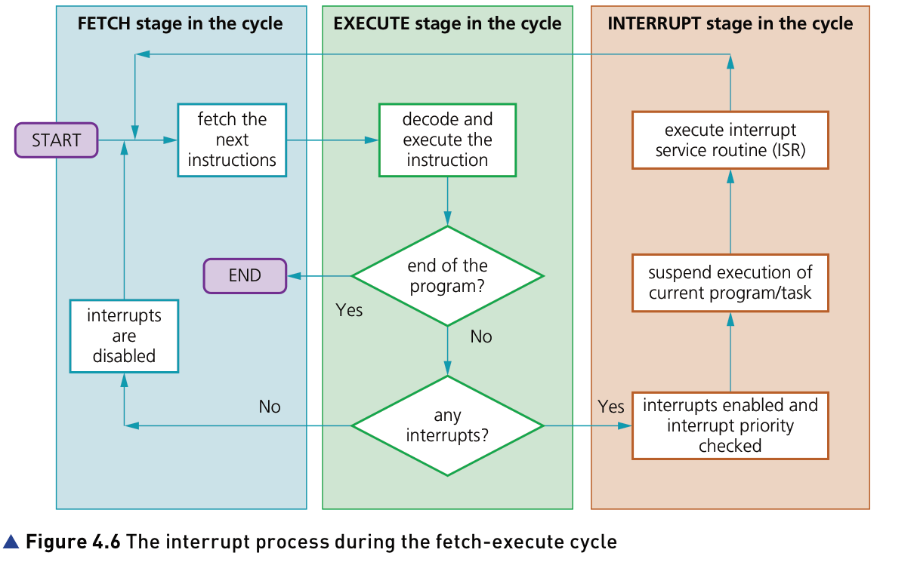

Charpter 1
1.1 Binary calculation
- Two’s complement – each binary digit is reversed and 1 is added in right-most position to produce another method of representing positive and negative numbers.
- We use two’s complement to represent negative number. The two’s complement uses these weightings for an 8-bit number representation: $−128\space\space\space\space64\space\space\space\space32\space\space\space\space16\space\space\space\space8 4\space\space\space\space2\space\space\space\space1$
EXAMPLE 1 10011010 is written in two’s complement. the denary value it represents is calculated by: -128 + 16 + 8 + 2 = -102
EXAMPLE 2 calculate 49 - 80 in binary. first, them into binary form. 49 = 00110001, 80 = 01010000 then, convert 80 into two’s complement. -80 = 10110000 at last, add 49 and -80 together. 00110001 + 10110000 = 11100001
1.2 The units of memory
Table1: SI units (base 10)
| name | unit | number of bytes |
|---|---|---|
| kilobyte | 1KB | $10^3$ |
| megabyte | 1MB | $10^6$ |
| gigabyte | 1GB | $10^9$ |
| terabyte | 1TB | $10^{12}$ |
| petabyte | 1PB | $10^{15}$ |
Table2:IEC units (base 2)
| name | unit | number of bytes |
|---|---|---|
| kilobyte | 1KiB | $2^{10}$ |
| megabyte | 1MiB | $2^{20}$ |
| gigabyte | 1GiB | $2^{30}$ |
| terabyte | 1TiB | $2^{40}$ |
| petabyte | 1PiB | $2^{50}$ |
1.3 Character set
- Character set – a list of characters that have been defined by computer hardware and software. It is necessary to have a method of coding, so that the computer can understand human characters.
- ASCII can represent 128 characters, Extended ASCII can represent 256 characters.
1.4 image
- Bit-map image – system that uses pixels to make up an image.
- Pixel – smallest picture element that makes up an image.
- Colour depth – number of bits used to represent the colours in a pixel.
- Bit depth – number of bits used to represent the smallest unit in.
- Image resolution – number of pixels that make up an image, for example, an image could contain 4096 × 3192 pixels.
- Screen resolution – number of horizontal and vertical pixels that make up a screen display. If the screen resolution is smaller than the image resolution, the whole image cannot be shown on the screen, or the original image will become lower quality.
- Resolution – number of pixels per column and per row on a monitor or television screen.
- Pixel density – number of pixels per square centimetre.
- Vector graphics – images that use 2D points to describe lines and curves and their properties that are grouped to form geometric shapes.
-
benefits of vector graphics:
- easy to resize
- suitable for image drawn to scale
- file size is small
-
benefits of bitmap:
-
more realistic
-
can edit pixels to change design
-
-
when saving a bit-map image, it is important to include a file header; this will contain items such as file type (.bmp or .jpeg), file size, image resolution, bit depth(usually 1, 8, 16, 24 or 32), any type of data compression employed and so on.
1.5 Sound
- Sampling resolution – number of bits used to represent sound amplitude (also known as bit depth).
- Sampling rate – number of sound samples taken per second.
- Frame rate – number of video frames that make up a video per second.
-
Increasing the number of possible values used to represent sound amplitude increases the accuracy of the sampled sound. This is known as sample resolution.
-
Sampling rate is the number of sound samples taken per second. By increasing sampling rate, quantization errors are reduced/increases the amount of detail stored.
1.6 File compression
- Lossless file compression – file compression method where the original file can be restored following decompression.
- Lossy file compression – file compression method where parts of the original file cannot be recovered during decompression, so some of the original detail is lost.
- JPEG – Joint Photographic Expert Group – a form of lossy file compression based on the inability of the eye to spot certain colour changes and hues.
- MP3/MP4 files – file compression method used for music and multimedia files.
- Audio compression – method used to reduce the size of a sound file using perceptual music shaping.
- Perceptual music shaping – method where sounds outside the normal range of hearing of humans, for example, are eliminated from the music file during compression.
- Bit rate – number of bits per second that can be transmitted over a network. It is a measure of the data transfer rate over a digital telecoms network.
- Run length encoding (RLE) – a lossless file compression technique used to reduce text and photo files in particular.
-
Lossless file compression is particularly important for files where loss of any data would be disastrous.
-
perceptual music shaping is lossy compression. It removes certain sounds, including:
- frequencies that are outside the human hearing range
- the softer sound when two sounds are played at the same time.
-
A common file format for images is JPEG, which uses lossy file compression. Scalable vector graphics (.svg) are defined in XML text files which, therefore, allows them to be compressed.
- RLE is a form of lossless/reversible file compression that reduces the size of a string of adjacent, identical data.
-
general method for compressing files:
- movie files:
- reduce sampling rate
- reduce sampling resolution
- reduce frame rate
- image files:
- crop the image
- decrease colour/bit depth
- reduce image resolution
- movie files:
Charpter 2
ARPAnet – Advanced Research Projects Agency Network. Spread spectrum technology – wideband radio frequency with a range of 30 to 50 metres. Wi-Fi – wireless connectivity that uses radio waves, microwaves. Implements IEEE 802.11 protocols. Bluetooth – wireless connectivity that uses radio waves in the 2.45 GHz frequency band. Spread spectrum frequency hopping – a method of transmitting radio signals in which a device picks one of 79 channels at random. If the chosen channel is already in use, it randomly chooses another channel. It has a range up to 100 metres. WPAN – wireless personal area network. A local wireless network which connects together devices in very close proximity (such as in a user’s house); typical devices would be a laptop, smartphone, tablet and printer. Twisted pair cable – type of cable in which two wires of a single circuit are twisted together. Several twisted pairs make up a single cable. Coaxial cable – cable made up of central copper core, insulation, copper mesh and outer insulation. Fibre optic cable – cable made up of glass fibre wires which use pulses of light (rather than electricity) to transmit data.
2.1 Private Networks and Pubilic Networks
-
Private networks are often LANs or intranets with restricted user access, for example, passwords and user ids are required to join the network.
-
many organisations will use the network and there are usually no specific password requirements to enter the network. but sub-networks may be under security management.
2.2 LAN and WAN
- WAN – wide area network (network covering a very large geographical area).
- LAN – local area network (network covering a small area such as a single building).
- MAN – metropolitan area network (network which is larger than a LAN but smaller than a WAN, which can cover several buildings in a single city, such as a university campus).
- Hub – hardware used to connect together a number of devices to form a LAN that directs incoming data packets to all devices on the network (LAN).
- Switch – hardware used to connect together a number of devices to form a LAN that directs incoming data packets to a specific destination address only.
- Router – device which enables data packets to be routed between different networks (for example, can join LANs to form a WAN).
- Modem – modulator demodulator. A device that converts digital data to analogue data (to be sent down a telephone wire); conversely it also converts analogue data to digital data (which a computer can process).
- WLAN – wireless LAN.
- (W)AP – (wireless) access point which allows a device to access a LAN without a wired connection.
- PAN – network that is centred around a person or their workspace.
-
The following is used as a guide for deciding the ‘size’ of a network: WAN: 100 km to over 1000 km MAN: 1 km to 100 km LAN: 10 m to 1000 m PAN: 1 m to 10 m
-
A typical LAN consists of a number of computers and devices (such as printers) connected to hubs or switches. One of the hubs or switches is usually connected to a router and/or modem to allow the LAN to connect to the internet or become part of a wide area network (WAN).
2.3 Networking models
- Client-server – network that uses separate dedicated servers and specific client workstations. All client computers are connected to the dedicated servers.
- Node – device connected to a network (it can be a computer, storage device or peripheral device).
- Peer-to-peer – network in which each node can share its files with all the other nodes. Each node has its own data and there is no central server. File server – a server on a network where central files and other data are stored. They can be accessed by a user logged onto the network.
-
Client-Server model
-
sharing of data is the most important part of the client-server model.
-
Client sends a request to the server and the server finds the requested data and sends it back to the client.
-
A system administrator manages the whole network; clients are connected through a network; allows data access even over large distances.
-
Users are able to access most of the files, which are stored on dedicated servers. The server dictates which users are able to access which files.
-
Benefits:
- The client-server model allows the installation of software onto a client’s computer.
- The model uses central security databases which control access to the shared resources. Once a user is logged into the system, they will have access to only those resources (such as a printer) and files assigned to them by the network administrator, so offers greater security than peer-to-peer networks.
- Client-server networks can be as large as you want them to be and they are much easier to scale up than peer-to-peer networks.
- This model offers the most stable system, for example, if someone deletes a shared resource from the server, the nightly back-up would restore the deleted resource.
-
Drawback:
- Client-server networks can become bottlenecked if there are several client requests at the same time.
-
In the client-server model, a file server is used and is responsible for
- central storage and management of data files, thus enabling other network users to access files
- allowing users to share information without the need for offline devices(such as a memory stick)
- allowing any computer to be configured as the host machine and act as the file server (note that the server could be a storage device (such as SSD or HDD) that could also serve as a remote storage device for other computers, thus allowing them to access this device as if it were a local storage device attached to their computer).
-
when to use:
- The company/user has a large user-base
- Access to network resources needs to be properly controlled
- There is a need for good network security
- The company requires its data to be free from accidental loss
-
-
Peer-to-peer model
-
connectivity is the most important aspect.
-
On a peer-to-peer network, each node joins the network to allow:
- the provision of services to all other network users; the services available are listed on a nominated ‘look up’ computer – when a node requests a service, the ‘look up’ computer is contacted to find out which of the other network nodes can provide the required service
- other users on the network to simply access data from another node
- communication with other peers connected to the network
- peers to be both suppliers and consumers (unlike the client-server model where consumers and resources are kept entirely separate from each other)
- peers to participate as equals on the network (again this is different to the client-server model where a webserver and client have different responsibilities).
-
Benefits:
- The peer-to-peer model does not have a central server. Each of the nodes (workstations) on the network can share its files with all the other nodes, and each of the nodes will have its own data.
- Because there is no central storage, there is no requirement to authenticate users.
-
Drawbacks:
- This model is used in scenarios where no more than 10 nodes are required where it is relatively easy for users to be in contact with each other on a regular basis. More than 10 nodes leads to performance and management issues.
- Peer-to-peer offers little data security since there is no central security system.
-
when to use:
- The network of users is fairly small.
- There is no need for robust security.
- They require workstation-based applications rather than being server-based.
-
2.4 Thin clients and thick clients
- Thin client – device that needs access to the internet for it to work and depends on a more powerful computer for processing.
- Thick client – device which can work both off line and on line and is able to do some processing even if not connected to a network/internet.
Table 1: pros and cons of thick and thin client hardware
| Pros | Cons | |
|---|---|---|
| Thick client | 1. more robust (device can carry out processing even when not connected to server)2. clients have more control (they can store their own programs and data files) | 1. less secure (relies on clients to keep their own data secure)2. each client needs to update data and software individually3. data integrity issues, since many clients access the same data which can lead to inconsistencies |
| Thin client | 1. less expensive to expand (low-powered and cheap devices can be used)2. all devices are linked to a server (data updates and new software installation done centrally)3. server can offer protection against hacking and malware | 1. high reliance on the server; if the server goes down or there is a break in the communication link then the devices cannot work2. despite cheaper hardware, the start-up costs are generally higher than for thick clients |
Table 2: differences between thick and thin client software
| Thin client software | Thick client software |
|---|---|
| always relies on a connection to a remote server or computer for it to work | can run some of the features of the software even when not connected to a server |
| requires very few local resources (such as SSD, RAM memory or computer processing time) | relies heavily on local resources |
| relies on a good, stable and fast network connection for it to work | more tolerant of a slow network connection |
| data is stored on a remote server or computer | can store data on local resources such as HDD or SSD |
2.5 Network topologies
- Packet – message/data sent over a network from node to node (packets include the address of the node sending the packet, the address of the packet recipient and the actual data).
- Hub – hardware used to connect together a number of devices to form a LAN that directs incoming data packets to all devices on the network (LAN).
- Switch – hardware used to connect together a number of devices to form a LAN that directs incoming data packets to a specific destination address only.
-
bus network topology – network using single central cable in which all devices are connected to this cable so data can only travel in one direction and only one device is allowed to transmit at a time.
-
disadvantages:
- If the main cable fails, the whole network goes down.
- The performance of the network deteriorates under heavy loading.
- The network is not secure since each packet passes through every node.
-
Advantages:
- Even if one node fails, the remainder of the network continues to function.
- It is easy to increase the size of the network by adding additional nodes.
-
In bus network topology, each node looks at each packet and determines whether or not the address of the recipient in the package matches the node address. If so, the node accepts the packet; if not, the packet is ignored.
-
These are most suitable for situations with a small number of devices with light traffic occurring.
-
-
Star network topology – a network that uses a central hub/switch with all devices connected to this central hub/switch so all data packets are directed through this central hub/switch.
-
disadvantages:
- The initial installation costs are high.
- If the central hub/switch fails, then the whole network goes down.
-
advantages:
- Data collisions are greatly reduced due to the topology.
- It is a more secure network since security methods can be applied to the central node and packets only travel to nodes with the correct address.
- It is easy to improve by simply installing an upgraded hub.
- If one of the connections is broken it only affects one of the nodes.
-
How packets are handled depends on whether the central node is a switch or a hub.
- If it is a hub, all the packets will be sent to every device/node on the star network – if the address in the packet matches that of the node, it will be accepted; otherwise, it is ignored (this is similar to the way packets are handled on a bus network).
- If the central node is a switch, packets will only be sent to nodes where the address matches the recipient address in the packet. The latter is clearly more secure, since only nodes intended to see the packet will receive it.
-
Star networks are useful for evolving networks where devices are frequently added or removed. They are well suited to applications where there is heavy data traffic.
-
-
Mesh network topology – interlinked computers/ devices, which use routing logic so data packets are sent from sending stations to receiving stations only by the shortest route.
-
There are two types of mesh network topologies: routing and flooding.
- Routing works by giving the nodes routing logic (in other words, they act like a router) so that data is directed to its destination by the shortest route and can be re-routed if one of the nodes in the route has failed.
- Flooding simply sends the data via all the nodes and uses no routing logic, which can lead to unnecessary loading on the network. It is a type of peer-to-peer network, but is fundamentally different.
-
Disadvantages:
- A large amount of cabling is needed, which is expensive and time consuming.
- Set-up and maintenance is difficult and complex.
-
Advantages:
- It is easy to identify where faults on the network have occurred.
- Any broken links in the network do not affect the other nodes.
- Good privacy and security, since packets travel along dedicated routes.
- The network is relatively easy to expand.
-
Applications:
- The internet and WANs/MANs are typical uses of mesh networks.
- Many examples include industrial monitoring and control where sensors are set up in mesh design and feedback to a control system which is part of the mesh.
-
-
Hybrid network – network made up of a combination of other network topologies.
-
The main advantages and disadvantages depend on which types of network are used to make up the hybrid network.
-
an additional disadvantage is that they can be very complex to install, configure and maintain.
-
additional advantages:
- They can handle large volumes of traffic.
- It is easy to identify where a network fault has occurred.
- They are very well suited to the creation of larger networks.
-
the handling of packets in hybrid networks will depend on which of the above topologies are used to make up the hybrid structure.
-
2.6 Cloud computing
- Cloud storage – method of data storage where data is stored on off-site servers.
- Data redundancy – situation in which the same data is stored on several servers in case of maintenance or repair.
-
Three common systems:
- Public cloud is a storage environment where the customer/client and cloud storage provider are different companies.
- Private cloud is storage provided by a dedicated environment behind a company firewall. Customer/client and cloud storage provider are integrated and operate as a single entity.
- Hybrid cloud is a combination of private and public clouds. Some data resides in the private cloud and less sensitive/less commercial data can be accessed from a public cloud storage provider.
-
Pros of using cloud storage:
- customer/client files stored on the cloud can be accessed at any time from any device anywhere in the world provided internet access is available
- no need for a customer/client to carry an external storage device with them, or use the same computer to store and retrieve information
- provides the user with remote back-up of data to aid data loss and disaster recovery
- recovers data if a customer/client has a hard disk or back-up device failure
- offers almost unlimited storage capacity
-
Cons of using cloud storage:
- if the customer/client has a slow or unstable internet connection, they would have problems accessing or downloading their data/files
- costs can be high if large storage capacity is required
- expensive to pay for high download/upload data transfer limits with the customer/client internet service provider (ISP)
- potential failure of the cloud storage company is possible – this poses a risk of loss of all back-up data
2.7 Wired and wireless networking
-
Wireless networking
- It is easier to expand networks and is not necessary to connect devices using cables.
- Devices have increased mobility, provided they are within range of the WAPs.
- Increased chance of interference from external sources.
- Data is less secure than with wired systems; it is easier to intercept radio waves and microwaves than cables so it is essential to protect data transmissions using encryption (such as WEP, WPA2).
- Data transmission rate is slower than wired networks (although it is improving).
- Signals can be stopped by thick walls (in old houses, for example) and signal strength can vary, or ‘drop out’.
-
Wired networking
- More reliable and stable network (wireless connectivity is often subjected to interference).
- Data transfer rates tend to be faster with no ‘dead spots’.
- Tends to be cheaper overall, in spite of the need to buy and install cable.
- Devices are not mobile; they must be close enough to allow for cable connections.
- Lots of wires can lead to tripping hazards, overheating of connections (potential fire risk) and disconnection of cables during routine office cleaning.
-
Other considerations
- If mobile phones and tablets are connected to the network, it will need to offer Wi-Fi or Bluetooth capability.
- There may be regulations in some countries regarding which wireless transmission frequencies can be used legally.
- Permission from authorities and land owners may be required before laying cables underground.
- There are numerous competing signals in the air around us; it is important to consider this when deciding whether to go for wired or wireless connectivity.
2.8 Hardware requirements of networks
- Hub – hardware used to connect together a number of devices to form a LAN that directs incoming data packets to all devices on the network (LAN).
- Switch – hardware used to connect together a number of devices to form a LAN that directs incoming data packets to a specific destination address only.
- Router – device which enables data packets to be routed between different networks (for example, can join LANs to form a WAN).
- Modem – modulator demodulator. A device that converts digital data to analogue data (to be sent down a telephone wire); conversely it also converts analogue data to digital data (which a computer can process).
- Gateway – device that connects LANs which use different protocols.
- Repeater – device used to boost a signal on both wired and wireless networks.
- Repeating hubs – network devices which are a hybrid of hub and repeater unit.
- Bridge – device that connects LANs which use the same protocols.
- Softmodem – abbreviation for software modem; a software-based modem that uses minimal hardware.
- NIC – network interface card. These cards allow devices to connect to a network/internet (usually associated with a MAC address set at the factory).
- WNIC – wireless network interface cards/controllers.
-
Hub – Hubs are hardware devices that can have a number of devices or computers connected to them.
-
Data packet sent to network would go to the hub, then they are sent out to all computers on the network.
graph LR
A((data packet)) ---> B[Hub]
B --> C(Computer)
B --> D(Computer)
B --> E(Computer)
-
Switch – Switches are similar to hubs, but are more efficient in the way they distribute the data packet.
-
the switch checks the data packet received and works out its destination address (or addresses) and sends the data to the appropriate computer(s) only. This makes using a switch a more secure and efficient way of distributing data.
graph LR
A((data packet)) --> B[Switch]
subgraph computers
C(Computer)
D(Computer)
E(Computer)
end
B --> D
-
Repeater – Repeaters are devices which are added to transmission systems to boost the signal so it can travel greater distances.
-
Sometimes, hubs contain repeaters and are known as repeating hubs. All signals fed to the hub are boosted before being sent to all devices in the network, thus increasing the operational range.
-
drawbacks of repeating hubs:
- They have only one collision domain.
- The devices are referred to as unmanaged since they are unable to manage delivery paths and also security in the network.
-
Bridge – Bridges are devices that connect one LAN to another LAN that uses the same protocol (communication rules).
-
Bridges are used to interconnect LANs (or parts of LANs), since sending out every data packet to all possible destinations would quickly flood larger networks with unnecessary traffic.
graph TB
subgraph LAN_2
A((server)) --- B[Switch]
B --- C(Computer)
B --- D(Computer)
B --- E(Computer)
end
subgraph LAN_1
F((server)) --- G[Switch]
G --- H(Computer)
G --- I(Computer)
G --- J(Computer)
end
B --- K{Bridge}
G --- K
-
Router – Routers enable data packets to be routed between the different networks for example, to join a LAN to a WAN.
-
roles of routers:
- restrict broadcasts to a LAN
- act as a default gateway
- can perform protocol translation
- can move data between networks
- can calculate the best route to a network destination address.
flowchart LR
subgraph LAN
E((server)) --- D
A(computer) & B(computer) & C(computer) --- D[Switch]
end
D --- F{Router}
F --- Internet
F -.- G["LAN or WAN"]
-
Gateway – A gateway is a network point (or node) that acts as an entrance to another network. It is a key point for data on its way to or from other networks.
- It can be used to connect two or more dissimilar LANs (LANs using different protocols). The gateway converts data packets from one protocol to another.
- Gateways can also act as routers, firewalls or servers – in other words, any device that allows traffic to flow in and out of the networks.
- Gateways can be wired or wireless devices.
Table: difference between routers and gateways
| Routers | Gateways |
|---|---|
| forward packets of data from one network to another; routers read each incoming packet of data and decide where to forward the packet | convert one protocol (or data format) to another protocol (format) used in a different network |
| can route traffic from one network to another network | convert data packets from one protocol to another; they act as an entry and exit point to networks |
| can be used to join LANs together to form a WAN (sometimes called brouters) and also to connect a number of LANs to the internet | translate from one protocol to another |
| offer additional features such as dynamic routing (ability to forward data by different routes) | do not support dynamic routing |
- Modems – To allow the transmission of digital data over analogue communication channels we need to use a modem (modulator demodulator). This device converts digital data to analogue data.
flowchart LR
A((internet)) <--> B{Modems} <--> C[Routers]
subgraph devices
D(laptop)
E(mobile phone)
F(PC)
end
C <--> D & E & F
-
Network interface card (NIC) – A network interface card (NIC) is needed to allow a device to connect to a network (such as the internet).
-
Wireless network interface card/controller (WNIC) – they are used to connect devices to the internet or other networks.
- Infrastructure mode requires WAPs (wireless access points) and all the data is transferred using the WAP and hub/switch; all the wireless devices connect to the WAP and must use the same security and authentication techniques.
- Ad hoc mode does not need to have access to WAPs; it is possible for devices to interface with each other directly.
2.9 Ethernet
- Ethernet – protocol IEEE 802.3 used by many wired LANs.
- Conflict – situation in which two devices have the same IP address.
- Broadcast – communication where pieces of data are sent from sender to receiver.
- Collision – situation in which two messages/data from different sources are trying to transmit along the same data channel.
- CSMA/CD – carrier sense multiple access with collision detection – a method used to detect collisions and resolve the issue.
- Ethernet – Ethernet is a protocol used by many wired LANs.
- Ethernet supports broadcast transmission (communications where pieces of data are sent from sender to receiver) and are used to send messages to all devices connected to a LAN. The risk is that two messages using the same data channel could be sent at the same time, leading to a collision.
- Carrier sense multiple access with collision detection (CSMA/CD) was developed to try and resolve this issue.
- Collison detection depends on simple physics: when a frame is sent it causes a voltage change on the Ethernet cable.
- When a collision is detected, a node stops transmitting a frame and transmits a ‘jam’ signal and then waits for a random time interval before trying to resend the frame. CSMA/CD protocol will define the random time period for a device to wait before trying again.
2.10 Bit streaming
- Bit streaming – contiguous sequence of digital bits sent over a network/internet.
- Buffering – store which holds data temporarily.
- Bit rate – number of bits per second that can be transmitted over a network. It is a measure of the data transfer rate over a digital telecoms network.
- On demand (bit streaming) – system that allows users to stream video or music files from a central server as and when required without having to save the files on their own computer/tablet/phone.
- Real-time (bit streaming) – system in which an event is captured by camera (and microphone) connected to a computer and sent to a server where the data is encoded. The user can access the data ‘as it happens’ live.
Table: pros and cons of bit streaming
| Pros | Cons |
|---|---|
| no need to wait for a whole video or music file to be downloaded before the user can watch or listen | cannot stream video or music files if broadband connection is lost |
| no need to store large files on your device|video or music files will pause to allow the data being streamed to ‘catch up’ if there is insufficient buffer capacity or slow broadband connection | allows video files and music files to be played on demand (as required)|streaming uses up a lot of bandwidth |
| no need for any specialist hardware | security risks associated with downloading files from the internet |
| affords piracy protection (more difficult to copy streamed files than files stored on a hard drive) | copyright issues |
-
On demand
- Digital files stored on a server are converted to a bit streaming format (encoding takes place and the encoded files are uploaded to a server).
- A link to the encoded video/music file is placed on the web server to be downloaded.
- The user clicks on the link and the video/music file is downloaded in a contiguous bit stream.
- Because it is on demand, the streamed video/music is broadcast to the user as and when required.
- It is possible to pause, rewind and fast forward the video/music if required.
-
Real time
- An event is captured by camera and microphone and is sent to a computer.
- The video signal is converted (encoded) to a streaming media file.
- The encoded file is uploaded from the computer to the dedicated video streaming server.
- The server sends the encoded live video to the user’s device.
- Since the video footage is live it is not possible to pause, rewind or fast forward.
2.11 internet and WWW(World Wide Web)
- Internet – massive network of networks, made up of computers and other electronic devices; uses TCP/IP communication protocols.
- World Wide Web (WWW) – collection of multimedia web pages stored on a website, which uses the internet to access information from servers and other computers.
- HyperText Mark-up Language (HTML) – used to design web pages and to write http(s) protocols, for example. Uniform resource locator (URL) – specifies location of a web page (for example, www.hoddereducation.co.uk). Web browser – software that connects to DNS to locate IP addresses; interprets web pages sent to a user’s computer so that documents and multimedia can be read or watched/listened to.
-
internet
- The internet is a massive network of networks which are made up of various computers and other electronic devices.
- It stands for interconnected network.
- The internet makes use of transmission control protocol (TCP)/internet protocol (IP).
- Because a WAN consists of LANs joined together, it may be a private network, and passwords and user IDs are required to access it. This is in contrast to the internet which is a vast number of decentralised networks and computers which have a common point of access, so that anyone with access to the internet can connect to the computers on these networks.
-
WWW
- This is a collection of multimedia web pages and other documents which are stored on websites.
- http(s) protocols are written using HyperText Mark-up Language (HTML).
- Uniform resource locators (URLs) specify the location of all web pages.
- Web resources are accessed by web browsers.
- The world wide web uses the internet to access information from servers and other computers.
2.12 hardware for internet
- Internet service provider (ISP) – company which allows a user to connect to the internet. They will usually charge a monthly fee for the service they provide.
- Public switched telephone network (PSTN) – network used by traditional telephones when making calls or when sending faxes.
- Voice over Internet Protocol (VoIP) – converts voice and webcam images into digital packages to be sent over the internet.
- Modems – To allow the transmission of digital data over analogue communication channels we need to use a modem (modulator demodulator). This device converts digital data to analogue data.
2.13 IP address
- Internet protocol (IP) – uses IPv4 or IPv6 to give addresses to devices connected to the internet.
- IPv4 – IP address format which uses 32 bits, such as 200.21.100.6.
- Classless inter-domain routing (CIDR) – increases IPv4 flexibility by adding a suffix to the IP address, such as 200.21.100.6/18.
- IPv6 – newer IP address format which uses 128 bits, such as A8F0:7FFF:F0F1:F000:3DD0: 256A:22FF:AA00.
- Zero compression – way of reducing the length of an IPv6 address by replacing groups of zeroes by a double colon (::); this can only be applied once to an address to avoid ambiguity.
- Sub-netting – practice of dividing networks into two or more sub networks.
- Private IP address – an IP address reserved for internal network use behind a router.
- Public IP address – an IP address allocated by the user’s ISP to identify the location of their device on the internet.
| Network class | IPv4 range | Number of netID bits | Number of hostID bits | Types of network |
|---|---|---|---|---|
| A | 0.0.0.0 to 127.255.255.255 | 8 | 24 | very large |
| B | 128.0.0.0 to 191.255.255.255 | 16 | 16 | medium size |
| C | 192.0.0.0 to 223.255.255.255 | 24 | 8 | small networks |
| D | 224.0.0.0 to 239.255.255.255 | - | - | multi-cast |
| E | 240.0.0.0 to 255.255.255.255 | - | - | experimental |
-
Classless inter-domain routing (CIDR) reduces this problem by increasing the flexibility of the IPv4 system. A suffix is used, such as 192.30.250.00/18, which means 18 bits will be used for the net ID and the last 14 bits will be used for the host ID.
-
IPv6 uses 128-bit addressing, which allows for much more complex addressing structures. An IPv6 address is broken into 16-bit chunks and because of this, it adopts the hexadecimal notation.
EXAMPLE 1: IPv6 address A8FB:7A88:FFF0:0FFF:3D21:2085:66FB:F0FA
EXAMPLE 2: zero compression 8055:F2F2:0000:FFF1:0000:0000:0000:DD04 can be written as: 8055:F2F2:0000:FFF1::DD04
Notice that zero compression can be used ONCE ONLY.
-
Private IP addresses are reserved for internal use behind a router or other NAT device. IP addresses that belong to class A, B or C are reserved for Private IP addresses.
-
Private IP addresses (which are internal value only) allow for an entirely separate set of addresses within a network. They allow access to the network without taking up a public IP address space. However, devices using these private IP addresses cannot be reached by internet users.
-
Public IP addresses are the ones allocated by a user’s ISP to identify the location of their device. Devices using these IP addresses are accessible from anybody using the internet. Public IP addresses are used by » DNS servers » network routers » directly-controlled computers.
-
Dynamic IP addresses are temporary and may have been assigned to a device on the network. A new one is reallocated each time a device connects to the internet.
-
Static IP address does not change each time a device connects to the internet.
2.14 URLs and DNS
- Domain name service (DNS) – (also known as domain name system) gives domain names for internet hosts and is a system for finding IP addresses of a domain name.
-
URL is represented by a set of four numbers, such as 109.108.158.1.
-
URL format which is easier to type: protocol://website address/path/filename
-
The DNS process involves converting a host name (such as www.hoddereducation.co.uk) into an IP address the computer can understand (such as 107.162.140.19).
Charpter 3
3.1 Type of memory and storage
- Memory cache – high speed memory external to processor which stores data which the processor will need again.
- Random access memory (RAM) – primary memory unit that can be written to and read from.
- Read-only memory (ROM) – primary memory unit that can only be read from.
- Dynamic RAM (DRAM) – type of RAM chip that needs to be constantly refreshed.
- Static RAM (SRAM) – type of RAM chip that uses flip-flops and does not need refreshing.
- Refreshed – requirement to charge a component to retain its electronic state.
- Programmable ROM (PROM) – type of ROM chip that can be programmed(altered) once.
- Erasable PROM (EPROM) – type of ROM that can be programmed more than once using ultraviolet (UV) light.
- Hard disk drive (HDD) – type of magnetic storage device that uses spinning disks.
- Latency – the lag in a system; for example, the time to find a track on a hard disk, which depends on the time taken for the disk to rotate around to its read-write head.
- Fragmented – storage of data in non-consecutive sectors; for example, due to editing and deletion of old data.
- Removable hard disk drive – portable hard disk drive that is external to the computer; it can be connected via a USB part when required; often used as a device to back up files and data.
- Solid state drive (SSD) – storage media with no moving parts that relies on movement of electrons.
- Electronically erasable programmable read-only memory (EEPROM) – read-only (ROM) chip that can be modified by the user, which can then be erased and written to repeatedly using pulsed voltages.
- Flash memory – a type of EEPROM, particularly suited to use in drives such as SSDs, memory cards and memory sticks.
- Optical storage – CDs, DVDs and Blu-rayTM discs that use laser light to read and write data.
- Dual layering – used in DVDs; uses two recording layers.
- Birefringence – a reading problem with DVDs caused by refraction of laser light into two beams.
-
Memory is usually referred to as the internal devices which the computer can access directly. This memory can be the user’s workspace, temporary data or data that is key to running the computer.
-
Storage devices allow users to store applications, data and files. The user’s data is stored permanently and they can change it or read it as they wish. Storage needs to be larger than internal memory since the user may wish to store large files.
-
Storage devices can also be removable to allow data, for example, to be transferred between computers. Removable devices allow a user to store important data in a different building in case of data loss.
-
Primary memory
- Primary memory is the part of computer memory which can be accessed directly from the CPU and contains the random access memory (RAM) and read-only memory (ROM) memory chips.
- Primary memory allows the processor to access applications and services temporarily stored in memory locations.
flowchart TB
subgraph structure of primary memory
A[Primary memory] --- B[RAM] & C[ROM]
B --- D[SRAM] & E[DRAM]
C --- F[PROM] & G[EPROM] & H[EEPROM]
end
table 1: differences between RAM and ROM
| RAM | ROM |
|---|---|
| temporary memory device | permanent memory device |
| volatile memory | non-volatile memory device |
| an be written to and read from | data stored cannot be altered |
| used to store data, files, programs, part of OS currently in use | sometimes used to store BIOS and other data needed at start up |
| can be increased in size to improve operational speed of a computer | - |
table 2: difference between SRAM and DRAM
| DRAM | SRAM |
|---|---|
| consists of a number of transistors and capacitors | uses flip-flops(arranged by transistors) to hold each bit of memory |
| needs to be constantly refreshed | does not need to be constantly refreshed |
| less expensive to manufacture than SRAM | has a faster data access time than DRAM |
| has a higher memory capacity than SRAM | - |
| main memory is constructed from DRAM | processor memory cache makes use of SRAM |
| consumes more power than SRAM under reasonable levels of access, as it needs to be constantly refreshed | if accessed at a high frequency, power usage can exceed that of DRAM |
Table 3: differences between PROM, EPROM and EEPROM
| PROM | EPROM | EEPROM |
|---|---|---|
| can be set once | can be overwritten multiple times | can be overwritten multiple times |
| - | can be erased by UV light | can be erased bby pulsed voltage |
| - | must be entirely erased before rewriting | don’t have to be entirely erased before rewriting |
| - | need to be removed from the device | can be erased in situ |
-
Embedded systems involve installing microprocessors into devices to enable operations to be controlled in a more efficient way.
-
Characteristics of an embedded system:
- the embedded system is built into / integrated
- combination of hardware and software designed for a specific function
- must have a processor, memory and input / output
- The system is not easily changed/updated
Table: pros and cons of embedded systems
| Pros | Cons |
|---|---|
| small in size and therefore easy to fit into devices | difficult to upgrade devices to take advantage of new technology |
| relatively low cost to make | troubleshooting faults in the device becomes a specialist task |
| usually dedicated to one task, making for simple interfaces and often no requirement of an operating system | although the interface can appear to be simple, in reality it can be more confusing (changing the time on a cooker clock can require several steps, for example) |
| consume very little power | - |
| very fast reaction to changing input (operate in real time) | any device that can be accessed over the internet is also open to hackers, viruses, and so on |
| with mass production comes reliability | due to the difficulty in upgrading and fault finding, devices are often just thrown away rather than being repaired (wasteful) |
- Secondary storage
- Secondary storage includes storage devices that are not directly accessible by the CPU.
- They are non-volatile devices which allow data to be stored as long as required by the user. This type of storage is much larger than primary memory, but data access time is considerably slower than RAM and ROM.
- All applications, the operating system, device drivers and general files (for example, documents, photos and music) are stored on secondary storage.
- principal operations of a magnetic hard disk:
- The hard disk has (one or more) platter/plate/disk
- Each surface of the platter/disk is (ferrous oxide which is) capable of being magnetised
- The platters/disks are mounted on a (central) spindle
- The entire mechanism is contained inside a sealed (aluminium) box.
- The disks are rotated (at high-speed)
- (Each surface of the disk) has a read/write head mounted on an arm (positioned just above the surface)
- Electronic circuits control the movement of the arm (and hence the heads)
- The surface of the platter/disk is divided into concentric tracks / circles
- The surface of the platter/disk is divided into sectors
- One track in one sector is the basic unit of storage called a block
- The data is encoded as a magnetic pattern for each block
- When writing to disk, a variation in the current in the head produces a variation in magnetic field on the disk
- When reading from disk, a variation in magnetic field produces a variation in current through the head
- principal operations of a magnetic hard disk:
- flash memory store data by controlling the movement of electrons within NAND chips. The data is stored as 0s and 1s in millions of tiny transistors (at each junction one transistor is called a floating gate and the other is called a control gate) within the chip. This effectively produces a non-volatile rewritable memory.
- principal operations of a optical reader/writer:
- Both CDs and DVDs use a single, spiral track which runs from the centre of the disk to the edge. When a disk spins, the optical head moves to the point where the laser beam ‘contacts’ the disk surface and follows the spiral track from the centre outwards. As with an HDD, a CD/DVD is divided into sectors allowing direct access of data. Also, as in the case of an HDD, the outer part of the disk runs faster than the inner part of the disk.
- The data is stored in ‘pits’ and ‘bumps’ on the spiral track. A red laser is used to read and write the data. CDs and DVDs can be designated R (write once only) or RW (can be written to or read from many times).
3.2 input and output devices
- Binder 3D printing – 3D printing method that uses a two-stage pass; the first stage uses dry powder and the second stage uses a binding agent.
- Direct 3D printing – 3D printing technique where print head moves in the x, y and z directions. Layers of melted material are built up using nozzles like an inkjet printer.
- Digital to analogue converter (DAC) – needed to convert digital data into electric currents that can drive motors, actuators and relays, for example.
- Analogue to digital converter (ADC) – needed to convert analogue data (read from sensors, for example) into a form understood by a computer.
- Organic LED (OLED) – uses movement of electrons between cathode and anode to produce an on-screen image. It generates its own light so no back lighting required.
- Screen resolution – number of pixels in the horizontal and vertical directions on a television/computer screen.
- Touch screen – screen on which the touch of a finger or stylus allows selection or manipulation of a screen image; they usually use capacitive or resistive technology.
- Capacitive – type of touch screen technology based on glass layers forming a capacitor, where fingers touching the screen cause a change in the electric field.
- Resistive – type of touch screen technology. When a finger touches the screen, the glass layer touches the plastic layer, completing the circuit and causing a current to flow at that point.
- Virtual reality headset – apparatus worn on the head that covers the eyes like a pair of goggles. It gives the user the ‘feeling of being there’ by immersing them totally in the virtual reality experience.
- Sensor – input device that reads physical data from its surroundings.
-
principal operations of laser printer:
- data from the document is sent to a printer driver
- printer driver ensures that the data is in a format that the chosen printer can understand
- check is made by the printer driver to ensure that the chosen printer is available to print (is it busy? is it off-line? is it out of ink? and so on)
- data is sent to the printer and stored in a temporary memory known as a printer buffer
- printing drum given a positive charge. As this drum rotates, a laser beam scans across it removing the positive charge in certain areas, leaving negatively charged areas which exactly match the text/images of the page to be printed
- drum is coated with positively charged toner (powdered ink). Since the toner is positively charged, it only sticks to the negatively charged parts of the drum
- negatively charged sheet of paper is rolled over the drum
- toner on the drum sticks to the paper to produce an exact copy of the page sent to the printer
- to prevent the paper sticking to the drum, the electric charge on the paper is removed after one rotation of the drum
- the paper goes through a fuser (a set of heated rollers), where the heat melts the ink so that it fixes permanently to the paper
- a discharge lamp removes all the electric charge from the drum so it is ready to print the next page
-
principal operations of 3D printer:
- see Binder 3D printing
- see Direct 3D printing
-
principal operations of speaker:
- The digital data is first passed through a digital to analogue converter (DAC) where it is converted into an electric current.
- This is then passed through an amplifier (since the current generated by the DAC will be small) to create a current large enough to drive a loudspeaker.
- This electric current is then fed to a loudspeaker where it is converted into sound.
-
principal operations of microphone:
- When sound is created, it causes the air to vibrate.
- When a diaphragm in the microphone picks up the air vibrations, the diaphragm also begins to vibrate.
- A copper coil is wrapped around a permanent magnet and the coil is connected to the diaphragm using a cone. As the diaphragm vibrates, the cone moves in and out causing the copper coil to move backwards and forwards.
- This forwards and backwards motion causes the magnetic field around the permanent magnet to be disturbed, inducing an electric current.
- The electric current is then either amplified or sent to a recording device. The electric current is analogue in nature.
-
Touchscreen:
- capacitive:
- Made up of many layers of glass that act like a capacitor creating electric fields between the glass plates in layers.
- When the top glass layer is touched, the electric current changes and the coordinates where the screen was touched are determined by an on board microprocessor.
- Benefits:
- Medium cost technology.
- Screen visibility is good even in strong sunlight.
- Permits multi-touch capability.
- Screen is very durable; it takes a major impact to break the glass.
- Drawbacks:
- Only allows use of bare fingers as the form of input; although the latest screens permit the use of a special stylus to be used.
- resistive:
- Makes use of an upper layer of polyester (a form of plastic) and a bottom layer of glass.
- When the top polyester layer is touched, the top layer and bottom layer complete a circuit.
- Signals are then sent out, which are interpreted by a microprocessor and the calculations determine the coordinates of where the screen was touched.
- Benefits:
- Relatively inexpensive technology.
- Possible to use bare fingers, gloved fingers or stylus to carry out an input operation.
- Drawbacks:
- Screen visibility is poor in strong sunlight.
- Does not permit multi-touch capability.
- Screen durability is only fair; it is vulnerable to scratches and the screen wears out through time.
- capacitive:
-
principal operations of virtual headset:
- Video is sent from a computer to the headset (either using an HDMI cable or a smartphone fitted into the headset).
- Two feeds are sent to an LCD/OLED display (sometimes two screens are used, one for the left side of the image and one for the right side of the image); lenses placed between the eyes and the screen allow for focusing and reshaping of the image/video for each eye, thus giving a 3D effect and adding to the realism.
- Most headsets use 110° field of view which is enough to give a pseudo 360° surround image/video.
- A frame rate of 60 to 120 images per second is used to give a true/realistic image.
- As the user moves their head (up and down or left to right), a series of sensors and/or LEDs measure this movement, which allows the image/video on the screen to react to the user’s head movements (sensors are usually gyroscopic or accelerometers; LEDs are used in conjunction with mini cameras to further monitor head movements).
- Headsets also use binaural sound (surround sound) so that the speaker output appears to come from behind, from the side or from a distance, giving very realistic 3D sound.
- Some headsets also use infrared sensors to monitor eye movement (in addition to head movement), which allows the depth of field on the screen to be more realistic; an example of this is to make objects in the foreground appear fuzzy when the user’s eyes indicate they are looking into the distance (and vice versa).
-
sensors:
-
difference between monitoring and control systems:
- Monitoring systems:
- if new data is outside the acceptable range, a warning message is sent to a screen or an alarm is activated.
- the microprocessor or computer has no effect on what is being monitored – it is simply ‘watching’ the process
- control systems:
- if the new data is outside the acceptable range, the microprocessor or computer sends signals to control valves, motors, and so on
- the output from the system affects the next set of inputs from the sensors (feedback loop)
- Monitoring systems:
-
the importance of feedback:
- to ensure the system operates with the given criteria
- by enabling system output to affect subsequent system input
- thus allowing conditions to be automatically adjusted
-
Types of sensors:
- temperature
- pressure
- infra-red(motion)
- sound
-
An actuator is an electromechanical device such as a relay, solenoid or motor.
-
3.3 logic gates and logic circuits
- Logic gates – electronic circuits which rely on ‘on/off’ logic. The most common ones are NOT, AND, OR, NAND, NOR and XOR.
- Logic circuit – formed from a combination of logic gates and designed to carry out a particular task. The output from a logic circuit will be 0 or 1.
- Truth table – a method of checking the output from a logic circuit. They use all the possible binary input combinations depending on the number of inputs; for example, two inputs have 22 (4) possible binary combinations, three inputs will have 23 (8) possible binary combinations, and so on.
- Boolean algebra – a form of algebra linked to logic circuits and based on TRUE and FALSE.
Charpter 4
4.1 CPU architecture
- Von Neumann architecture – computer architecture which introduced the concept of the stored program in the 1940s.
- Arithmetic logic unit (ALU) – component in the processor which carries out all arithmetic and logical operations.
- Control unit – ensures synchronisation of data flow and programs throughout the computer by sending out control signals along the control bus.
- System clock – produces timing signals on the control bus to ensure synchronisation takes place.
- Immediate access store (IAS) – holds all data and programs needed to be accessed by the control unit.
- Accumulator – temporary general purpose register which stores numerical values at any part of a given operation.
- Register – temporary component in the processor which can be general or specific in its use that holds data or instructions as part of the fetch-execute cycle.
- Status register – used when an instruction requires some form of arithmetic or logical processing.
- Flag – indicates the status of a bit in the status register, for example, N = 1 indicates the result of an addition gives a negative value.
- Address bus – carries the addresses throughout the computer system.
- Data bus – allows data to be carried from processor to memory (and vice versa) or to and from input/output devices.
- Control bus – carries signals from control unit to all other computer components.
- Unidirectional – used to describe a bus in which bits can travel in one direction only.
- Bidirectional – used to describe a bus in which bits can travel in both directions.
- Word – group of bits used by a computer to represent a single unit.
- Clock cycle – clock speeds are measured in terms of GHz; this is the vibrational frequency of the clock which sends out pulses along the control bus – a 3.5 GHZ clock cycle means 3.5 billion clock cycles a second.
- Overclocking – changing the clock speed of a system clock to a value higher than the factory/recommended setting.
- BIOS – basic input/output system.
- Cache memory – a high speed auxiliary memory which permits high speed data transfer and retrieval.
- Core – a unit made up of ALU, control unit and registers which is part of a CPU. A CPU may contain a number of cores.
- Dual core – a CPU containing two cores.
- Quad core – a CPU containing four cores.
- Port – external connection to a computer which allows it to communicate with various peripheral devices. A number of different port technologies exist.
- Universal Serial Bus (USB) – a type of port connecting devices to a computer.
- Asynchronous serial data transmission – serial refers to a single wire being used to transmit bits of data one after the other. Asynchronous refers to a sender using its own clock/timer device rather sharing the same clock/timer with the recipient device.
- High-definition multimedia interface (HDMI) – type of port connecting devices to a computer.
- Video Graphics Array (VGA) – type of port connecting devices to a computer.
- High-bandwidth digital copy protection (HDCP) – part of HDMI technology which reduces risk of piracy of software and multimedia.
- Fetch-execute cycle – a cycle in which instructions and data are fetched from memory and then decoded and finally executed.
- Program counter (PC) – a register used in a computer to store the address of the instruction which is currently being executed.
- Current instruction register – a register used to contain the instruction which is currently being executed or decoded.
- Register Transfer Notation (RTN) – short hand notation to show movement of data and instructions in a processor, can be used to represent the operation of the fetch-execute cycle.
- Interrupt – signal sent from a device or software to a processor requesting its attention; the processor suspends all operations until the interrupt has been serviced.
- Interrupt priority – all interrupts are given a priority so that the processor knows which need to be serviced first and which interrupts are to be dealt with quickly.
- Interrupt service routine (ISR) or interrupt handler – software which handles interrupt requests (such as ‘printer out of paper’) and sends the request to the CPU for processing.
-
feature for Von Neumann model:
- a central processing unit (CPU or processor)
- a processor able to access the memory directly
- computer memories that could store programs as well as data
- stored programs made up of instructions that could be executed in sequential order.
-
stored program concept: Instructions and data are stored in the same memory space / in main memory.

-
The main components of the processor(CPU) are the arithmetic logic unit (ALU), the control unit (CU), the system clock and the immediate access store (IAS).
-
ALU
-
The ALU allows the required arithmetic or logic operations to be carried out while a program is being run. It is possible for a computer to have more than one ALU – one will perform fixed point operations and the other floating-point operations.
-
The accumulator (ACC) is a temporary register used when carrying out ALU calculations.
-
-
CU
-
The CU reads an instruction from memory. This instruction is then interpreted.
-
the address of the location where the instruction can be found is stored in the program counter (PC).
-
During that process, signals are generated along the control bus to tell the other components in the computer what to do. The CU ensures synchronisation of data flow and program instructions throughout the computer.
-
-
system clock
- A system clock is used to produce timing signals on the control bus to ensure this vital synchronisation takes place – without the clock the computer would simply crash.
-
IAS
-
The IAS is another name for primary (RAM) memory.
-
The IAS holds all the data and programs that the processor (CPU) needs to access. The CPU takes data and programs held in backing store and puts them into the IAS temporarily.
-
This is done because read/write operations carried out using the IAS are considerably faster than read/write operations to backing store. Consequently, any key data needed by an application will be stored temporarily in IAS to speed up operations.
-
-
-
One of the most fundamental components of the Von Neumann system is the register. Registers can be general purpose or special purpose.
-
General purpose registers hold data that is frequently used by the CPU or can be used by the programmer when addressing the CPU directly. The accumulator is a good example of a general purpose register and will be used as such throughout this book.
-
Special purpose registers have a specific function within the CPU and hold the program state.

-
-
(System) buses are used in computers as a parallel transmission component; each wire in the bus transmits one bit of data. There are three common buses used in the Von Neumann architecture known as address bus, data bus and control bus.
-
Address bus
-
As the name suggests, the address bus carries addresses throughout the computer system.
-
Between the CPU and memory the address bus is unidirectional.
-
Bus width is important.
-
-
Data bus
-
The data bus is bidirectional.
-
This means data can be carried from CPU to memory (and vice versa) as well as to and from input/output devices.
-
It is important to point out that data can be an address, an instruction or a numerical value.
-
Bus width is important.
-
-
Control bus
-
The control bus is also bidirectional.
-
It carries signals from the CU to all the other computer components. It only carries control signals.
-
Bus width is usually 8-bits.
-
-

-
factors contribute to the performance of the computer system
-
bus width of address bus and data bus
-
Address bus: the wider the bus, more memory locations can be addressed simultaneously.
-
Data bus: the wider the bus, the larger the word length that can be transported. (A word is a group of bits which can be regarded as a single unit, for example, 16-bit, 32-bit or 64-bit word lengths are the most common).
-
-
Overclocking
-
Each instruction is executed on a clock pulse. Increase in clock speed means more instructions can be executed per second.
-
the clock speed can be changed by accessing the basic input/output system (BIOS) and altering the settings.
-
However, using a clock speed higher than the computer was designed for can lead to problems, such as
-
execution of instructions outside design limits, which can lead to seriously unsynchronised operations (in other words, an instruction is unable to complete in time before the next one is due to be executed) and the computer would frequently crash and become unstable
-
serious overheating of the CPU leading to unreliable performance.
-
-
-
cache memory
-
It is similar to RAM in that its contents are lost when the power is turned off.
-
Cache uses SRAM whereas most computers use DRAM for main memory. Therefore, cache memories will have faster access times, since there is no need to keep refreshing, which slows down access time.
-
Cache memory stores frequently used instructions and data that need to be accessed faster.
-
-
cores
-
one core is made up of an ALU, a CU and the registers.
-
Each core processes one instruction per clock pulse, so increase the number of cores can increase the number of instructions executed per second.
-
The idea of using more cores alleviates the need to continually increase clock speeds.
-
-
-
Input and output devices are connected to a computer via ports.
-
USB
-
HDMI
-
VGA
-
-
F-E cycle
-

-
Register Transfer Notation (RTN)
- 
-
Interrupts
-

-
An interrupt is a signal sent from a device or from software to the processor. This will cause the processor to temporarily stop what it is doing and service the interrupt.
-
possible causes:
-
a timing signal
-
input/output processes(waiting for receiving data)
-
a hardware fault(e.g. printer has not enough ink)
-
user interaction(‘break’ conmand)
-
a software error that cannot be ignored
-
-
Once the interrupt signal is received, the processor either carries on with what it was doing or stops to service the device/program that generated the interrupt. The computer needs to identify the interrupt type and also establish the level of interrupt priority.
-
Interrupts allow computers to carry out many tasks or to have several windows open at the same time. An example would be downloading a file from the internet at the same time as listening to some music from the computer library.
-
Whenever an interrupt is serviced, the status of the current task being run is saved. The contents of the program counter and other registers are saved. Then, the interrupt service routine (ISR) is executed by loading the start address into the program counter.
-
Once the interrupt has been fully serviced, the status of the interrupted task is reinstated (contents of saved registers retrieved) and it continues from the point prior to the interrupt being sent.
-
-
4.2 Assembly language
-
Machine code – the programming language that the CPU uses.
-
Instruction – a single operation performed by a CPU.
-
Assembly language – a low-level chip/machine specific programming language that uses mnemonics.
-
Opcode – short for operation code, the part of a machine code instruction that identifies the action the CPU will perform.
-
Operand – the part of a machine code instruction that identifies the data to be used by the CPU.
-
Source code – a computer program before translation into machine code.
-
Assembler – a computer program that translates programming code written in assembly language into machine code. Assemblers can be one pass or two pass.
-
Instruction set – the complete set of machine code instructions used by a CPU.
-
Object code – a computer program after translation into machine code.
-
Addressing modes – different methods of using the operand part of a machine code instruction as a memory address.
-
Absolute addressing – mode of addressing in which the contents of the memory location in the operand are used.
-
Direct addressing – mode of addressing in which the contents of the memory location in the operand are used, which is the same as absolute addressing.
-
Indirect addressing – mode of addressing in which the contents of the contents of the memory location in the operand are used.
-
Indexed addressing – mode of addressing in which the contents of the memory location found by adding the contents of the index register (IR) to the address of the memory location in the operand are used.
-
Immediate addressing – mode of addressing in which the value of the operand only is used.
-
Relative addressing – mode of addressing in which the memory address used is the current memory address added to the operand.
-
Symbolic addressing – mode of addressing used in assembly language programming, where a label is used instead of a value.
-
Assembly language and machine code
-
The only programming language that a CPU can use is machine code.
-
In order to shorten the development time for writing computer programs, other programming languages were developed, where the instructions were easier to learn and understand. Any program not written in machine code needs to be translated before the CPU can carry out the instructions, so language translators were developed.
-
The first programming language to be developed was assembly language, this is closely related to machine code and uses mnemonics instead of binary.
-
The structure of assembly language and machine code instructions is the same. Each instruction has an opcode that identifies the operation to be carried out by the CPU. Most instructions also have an operand that identifies the data to be used by the opcode.
-
-
Different stages of the assembly process(use two-pass assembler)
-
Pass 1
-
Read the assembly language program one line at a time.
-
Ignore anything not required, such as comments.
-
Allocate a memory address for the line of code.
-
Check the opcode is in the instruction set.
-
Add any new labels to the symbol table with the address, if known.
-
Place address of labelled instruction in the symbol table.
-
-
Pass 2
-
Read the assembly language program one line at a time.
-
Generate object code, including opcode and operand, from the symbol table generated in Pass 1.
-
Save or execute the program
-
-
-
instruction groups:
-
Data movement
- LDM, LDD, LDI, LDX, LDR, MOV, STO, END
-
Input and output of data instructions
- IN, OUT
-
Arithmetic operation instructions
- ADD, SUB, INC, DEC
-
Unconditional and conditional instructions
- JMP, JPE, JPN, END
-
-
addressing modes
-
assume: [200] = 20, [20] = 5, [IR] = 4, [204] = 25
-
Absolute(Direct) addressing
-
LDD 200(load the value in address 200)
-
20 would be stored in ACC
-
-
Indirect addressing
-
LDI 200(get the value in address 200, this value is the address of the value that we will load)
-
5 is stored in ACC
-
-
Indexed addressing
-
LDX 200(load the value in address 200+[IR], in this case, 204)
-
25 is stored in ACC
-
-
Immediate addressing
-
LDM #200(load the value inputed)
-
200 is stored in ACC
-
-
Relative addressing
-
the memory address used is the current memory address added to the operand.
-
For example, JMR #5 would transfer control to the instruction 5 locations after the current instruction.
-
-
4.3 Bit manipulation
-
Shift – moving the bits stored in a register a given number of places within the register; there are different types of shift.
-
Logical shift – bits shifted out of the register are replaced with zeros.
-
Arithmetic shift – the sign of the number is preserved.
-
Cyclic shift – no bits are lost, bits shifted out of one end of the register are introduced at the other end of the register.
-
Left shift – bits are shifted to the left.
-
Right shift – bits are shifted to the right.
-
Monitor – to automatically take readings from a device.
-
Control – to automatically take readings from a device, then use the data from those readings to adjust the device.
-
Mask – a number that is used with the logical operators AND, OR or XOR to identify, remove or set a single bit or group of bits in an address or register.
Charpter 5
5.1 Operating ststem
CMOS – complementary metal-oxide semiconductor. Operating system – software that provides an environment in which applications can run and provides an interface between hardware and human operators. HCI – human–computer interface. GUI – graphical user interface. CLI – command line interface. Icon – small picture or symbol used to represent, for example, an application on a screen. WIMP – windows, icons, menu and pointing device. Post-WIMP – interfaces that go beyond WIMP and use touch screen technology rather than a pointing device. Pinching and rotating – actions by fingers on a touch screen to carry out tasks such as move, enlarge, reduce, and so on. Memory management – part of the operating system that controls the main memory. Memory optimisation – function of memory management that determines how memory is allocated and deallocated. Memory organisation – function of memory management that determines how much memory is allocated to an application. Security management – part of the operating system that ensures the integrity, confidentiality and availability of data. Contiguous – items next to each other. Virtual memory systems – memory management (part of OS) that makes use of hardware and software to enable a computer to compensate for shortage of actual physical memory. Memory protection – function of memory management that ensures two competing applications cannot use same memory locations at the same time. Process management – part of the operating system that involves allocation of resources and permits the sharing and exchange of data. Hardware management – part of the operating system that controls all input/output devices connected to a computer (made up of sub-management systems such as printer management, secondary storage management, and so on). Device driver – software that communicates with the operating system and translates data into a format understood by the device. Utility program – parts of the operating system which carry out certain functions, such as virus checking, defragmentation or hard disk formatting. Disk formatter – utility that prepares a disk to allow data/files to be stored and retrieved. Bad sector – a faulty sector on an HDD which can be soft or hard. Antivirus software – software that quarantines and deletes files or programs infected by a virus (or other malware). It can be run in the background or initiated by the user. Heuristic checking – checking of software for behaviour that could indicate a possible virus. Quarantine – file or program identified as being infected by a virus which has been isolated by antivirus software before it is deleted at a later stage. False positive – a file or program identified by a virus checker as being infected but the user knows this cannot be correct. Disk defragmenter – utility that reorganises the sectors on a hard disk so that files can be stored in contiguous data blocks. Disk content analysis software – utility that checks disk drives for empty space and disk usage by reviewing files and folders. Disk compression – software that compresses data before storage on an HDD. Back-up utility – software that makes copies of files on another portable storage device.
Program library – a library on a computer where programs and routines are stored which can be freely accessed by other software developers for use in their own programs. Library program – a program stored in a library for future use by other programmers. Library routine – a tested and ready-to-use routine available in the development system of a programming language that can be incorporated into a program. Dynamic link file (DLL) – a library routine that can be linked to another program only at the run time stage.
-
Why we need operating system?
- An operating system provides both the environment in which applications can be run, and a useable interface between humans and computer. An operating system also disguises the complexity of computer hardware.
-
key management tasks
-
Memory management
-
security management
-
process management
-
hardware managemant
-
file management
-
Last modified on 2023-04-30